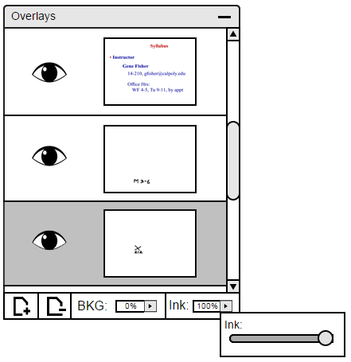
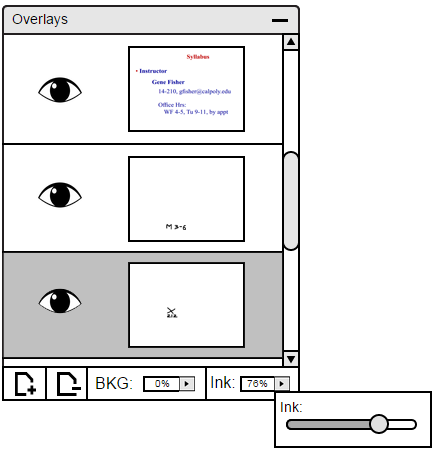
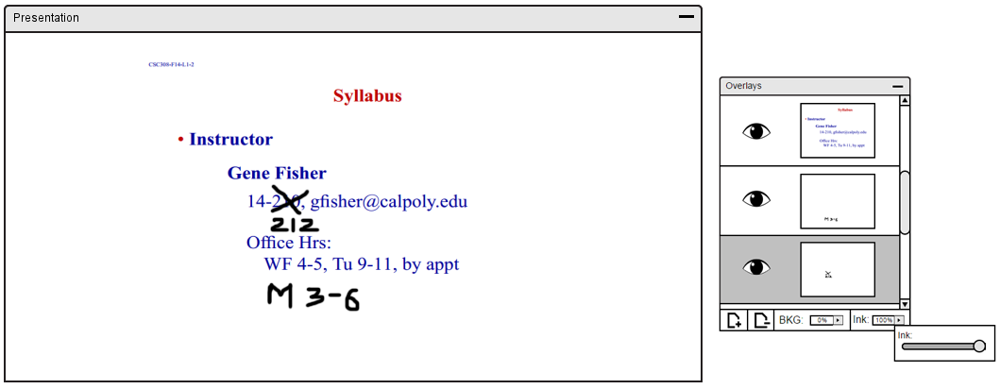
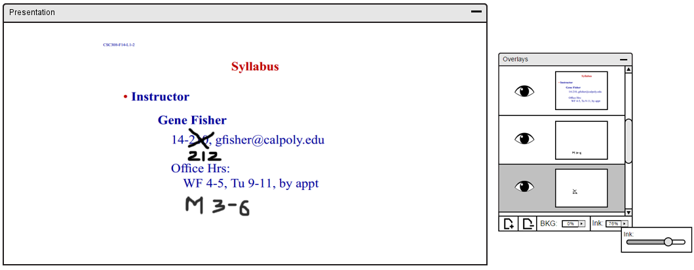
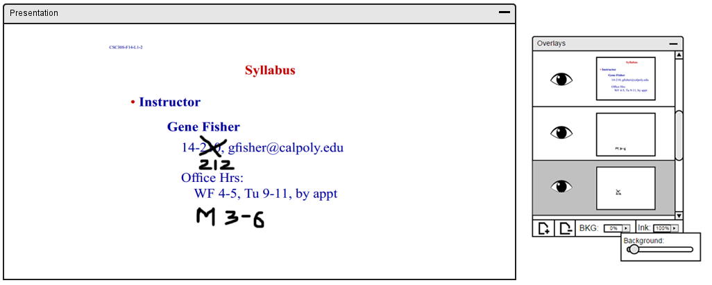
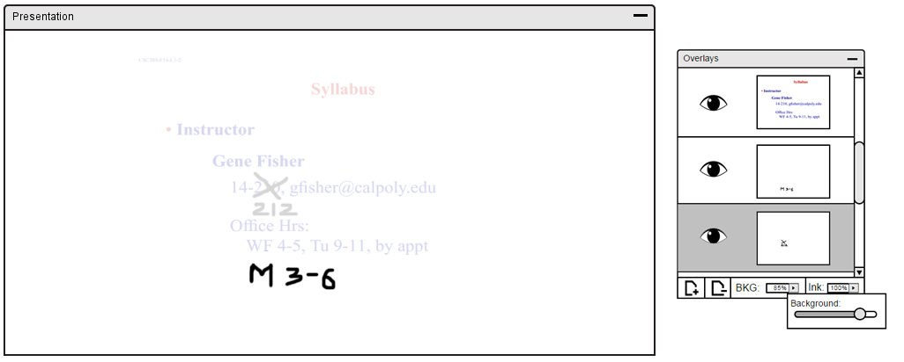

When having multiple layers, the overall view of it on the presentation board might be too chaotic and overwhelming. With the use of the slider, the user has the ability to fade certain text or background. With this ability, other users are able to focus on the necessary material but can look at the faded text or background to look back if needed.
First, the user needs to select which layer that needs to be changed. Then, the text or the background slider can be found on the bottom right of the layer panel. The user can select the arrow button to have the slider pop up as shown in Figure 7.

Figure 7: Layer Panel with Ink Slider Open.

Figure 8: Layer Panel with Ink Slider Being Adjusted.

Figure 9: Displays the Ink Opacity.

Figure 10: Ink Opacity Changed.

Figure 11: Displays the Background Opacity.

Figure 12: Background Opacity Changed.